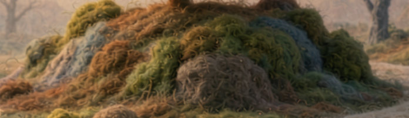
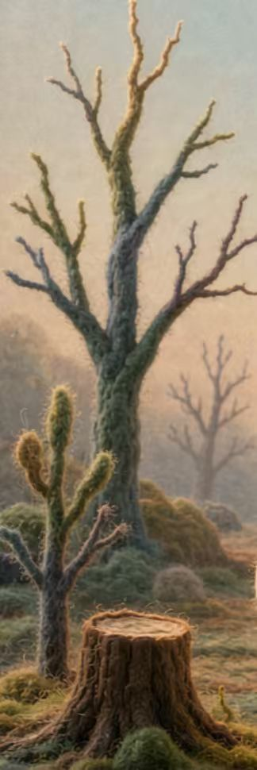

01 · 苔绿与暖阳
自然观察
叶脉 / 标本 / 微缩观察台
- 布置
- 植物标本、叶片、会缓慢展开的枝条
- 声音
- 风、叶、远处鸟鸣
- 面板
- 藏在树壁上的叶脉纹路
建议作为重点打磨的精致室内

探索是主角。敲门、进屋、观察与查看资料串成一条可反复游玩的路径。
选择刺猬的基础装扮和公开标签。
沿树根、蘑菇和林间小路自由探索。
看门牌标签，向感兴趣的树洞发出申请。
获得预设许可后，入口展开，进入房间。
环绕查看不同的布置、颜色、光和声音。
镜头切正面，打开示例数据页，再返回原处。
以下图片是你提供的风格锚点。制作时抓住造型、纤维触感和光线氛围，资源需另行制作成可运行的 3D 模型。




设计原则：近处突出刺猬、蘑菇和入口的纤维轮廓；远处以简化形体、柔和雾气和灯光营造层次。正式刺猬造型以三视图为准；以下新增参考用于树洞、倒木与树桩外形。


建议的灰盒地图。中央空地连接自己的树洞和三条短路径；第一版不做大型开放世界。
三条短路让玩家能够自由选择探索顺序，同时保证 Demo 主路径容易找到。
这三种内容仅用于第一版验证“内容改变空间”的设计。你可以在验收时替换主题；人物资料均为演示内容。
建议作为重点打磨的精致室内
简化室内 · 共用树洞结构
简化室内 · 共用树洞结构
门牌可展示地区、年龄段、兴趣等公开标签，但不以这些标签推断一个人必然持有的观点或审美。
先让探索、进入和视角切换成为完整体验，再引入真实玩家与权限服务。
参考图不直接当成 3D 资源使用。先用简单几何体验证路线，再逐项替换正式资产。
清晰轮廓、待机与走路；基础配色和一两件配饰。
连续可行走区域、树根路标、苔藓地表和背景层次。
统一入口造型、关门状态、获准后的展开动画。
单只、成簇和高矮变化，供森林重复摆放。
一间完整精致室内，两间主题明确的简化室内。
门牌、敲门、许可、资料入口、视角切换与返回。
本阶段已根据补充要求确认通过；这里保留产品范围与制作依据，阶段 1 的可操作灰盒另页验收。
如果想替换茧房主题、调整路线或改变第一版范围，请写在这里。勾选仅用于整理反馈，不会自动批准下一阶段。
请把反馈粘贴到当前聊天中。阶段 0 已通过，阶段 1 的可操作灰盒已单独交付验收。